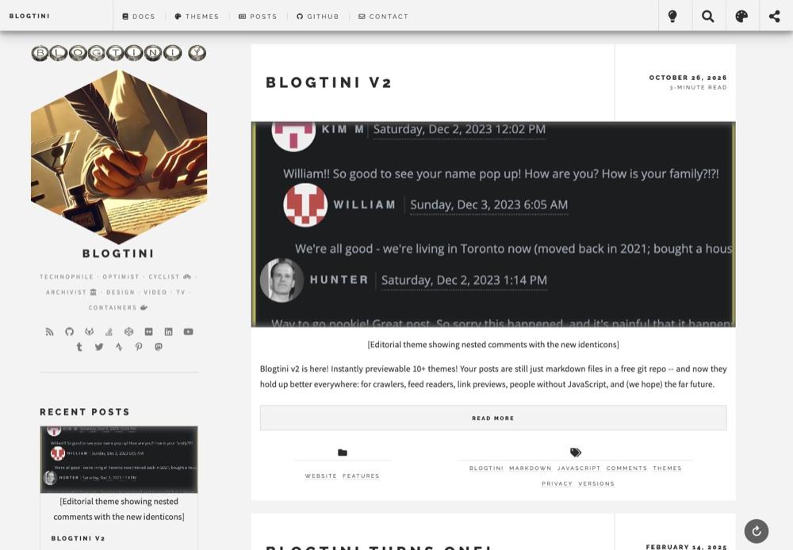
The default. Posts w/ big featured images, and a sidebar w/ recent posts, about & categories.
HTML5 UP, via Hugo Future Imperfect Slim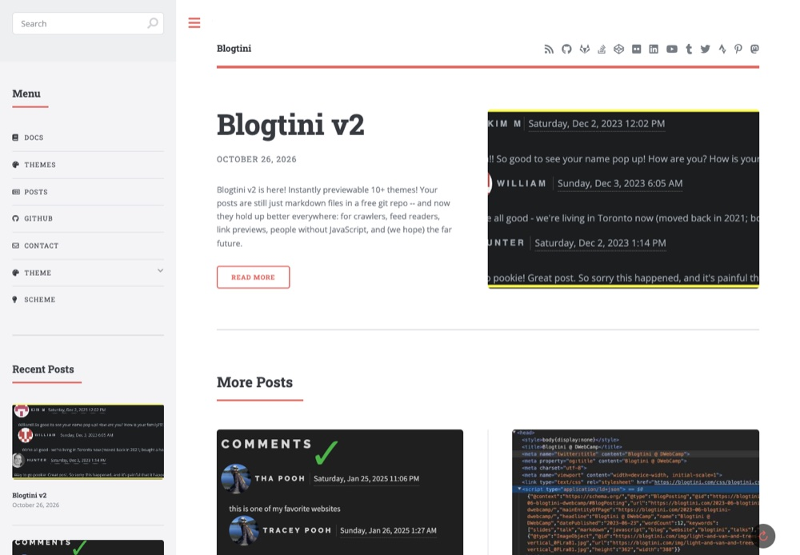
A magazine look: a clean column of posts, w/ a big sidebar menu that tucks away.
HTML5 UP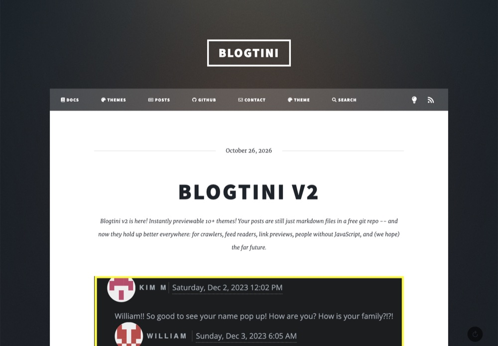
A big intro over a full-page photo, then posts as tiles.
HTML5 UP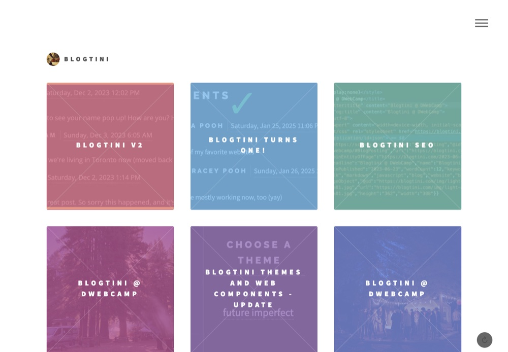
Posts as colorful tiles that light up as you hover.
HTML5 UP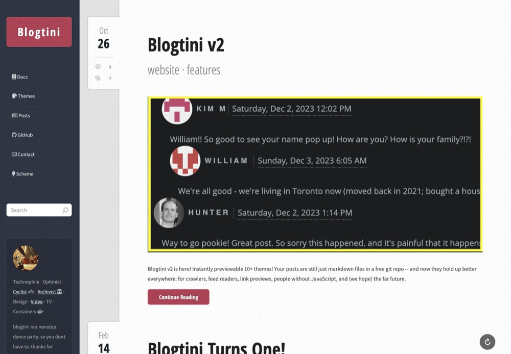
A classic blog: posts w/ stats beside them, and a sidebar w/ a calendar.
HTML5 UP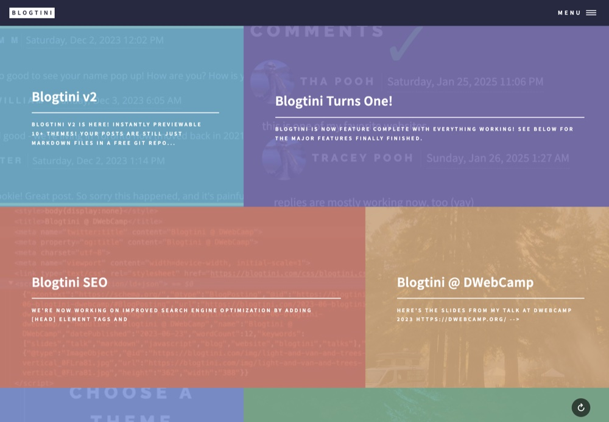
Bold, full-bleed image tiles -- great for photo-heavy posts.
HTML5 UP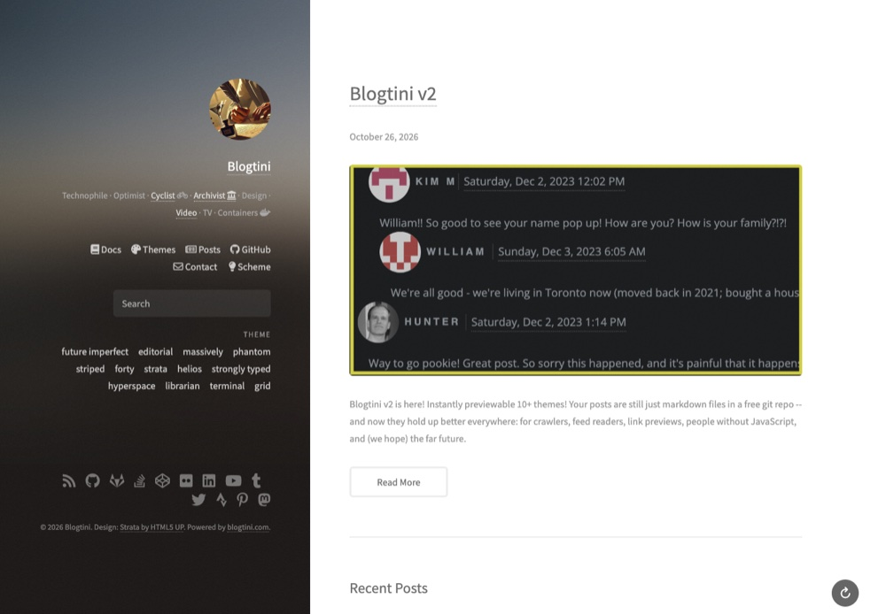
A fixed profile column on the left, posts on the right.
HTML5 UP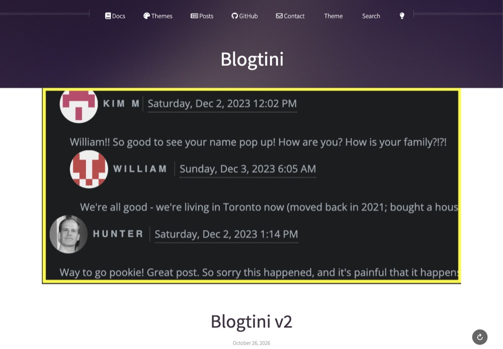
A big banner header, a nav bar w/ dropdowns, and a classic multi-column layout.
HTML5 UP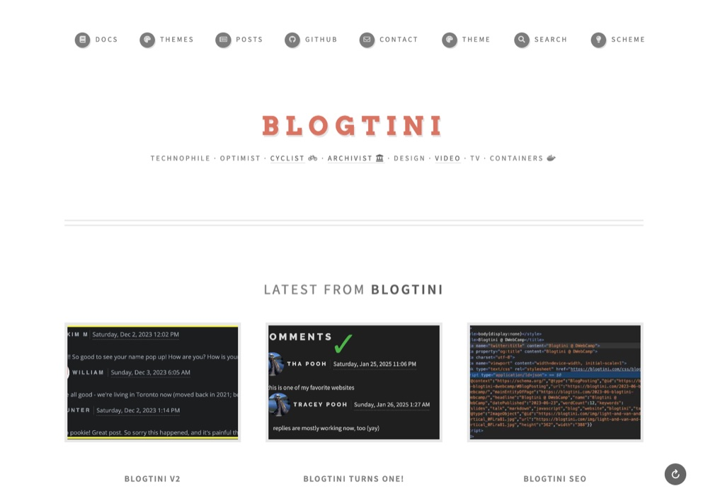
Bold type & heavy borders, w/ a nav bar & dropdowns.
HTML5 UP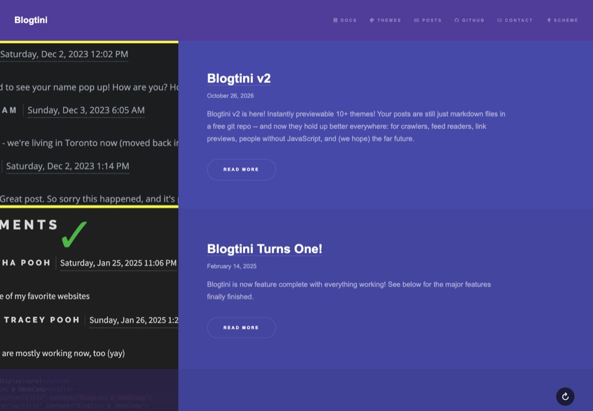
A purple one-pager: a side nav that lights up as you scroll, posts as "spotlight" rows that slide in.
HTML5 UP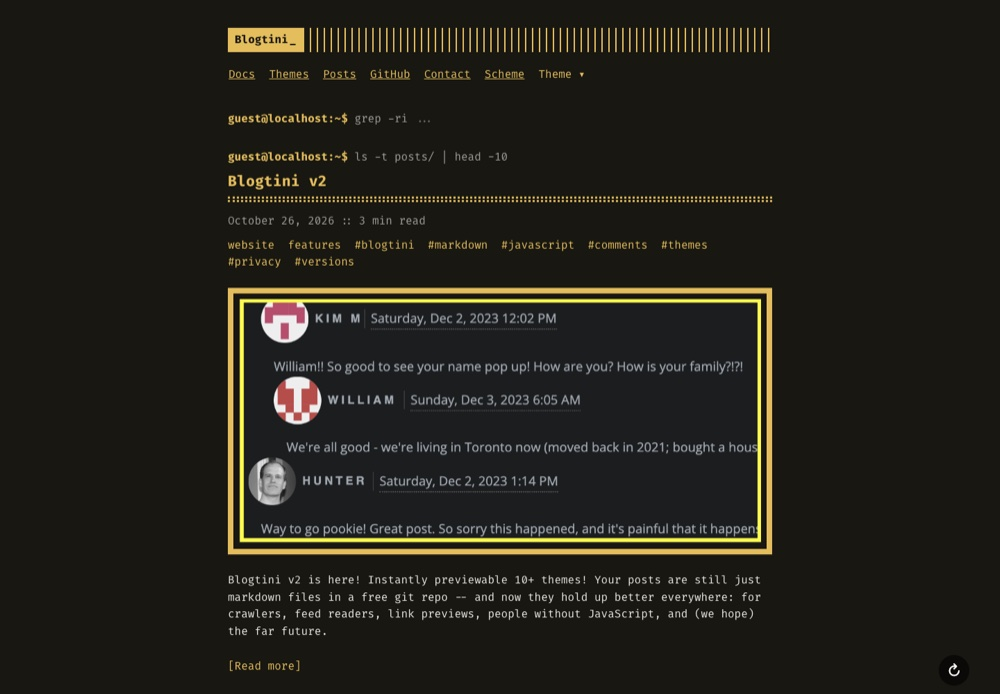
A retro terminal: monospace, amber on near-black, a shell prompt atop every page.
panr's Hugo Terminal theme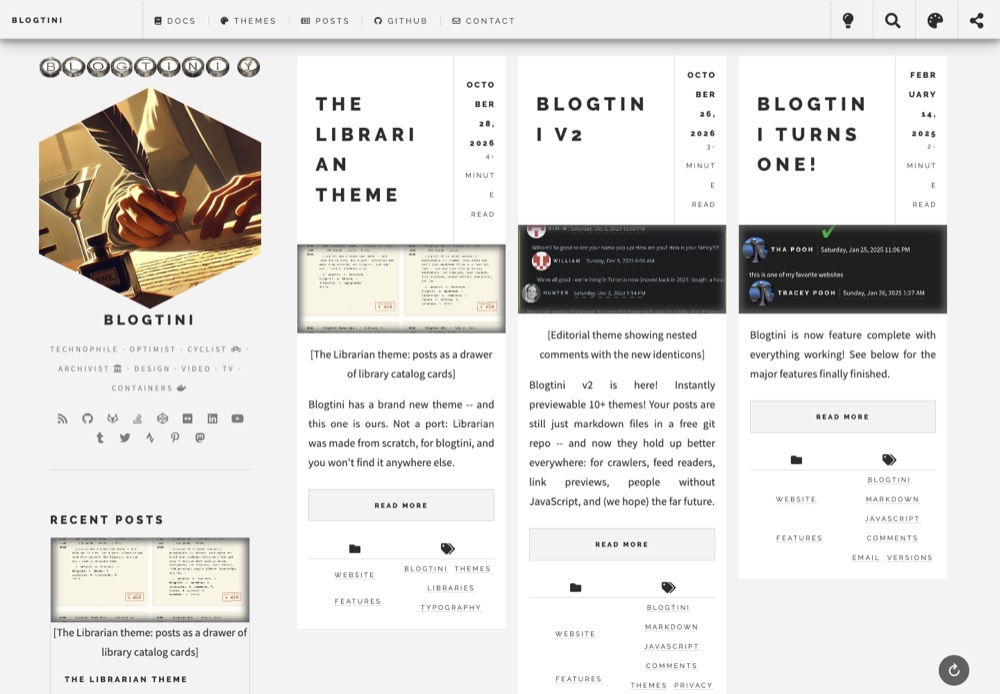
Future imperfect, w/ posts as a simple grid of cards.
blogtini